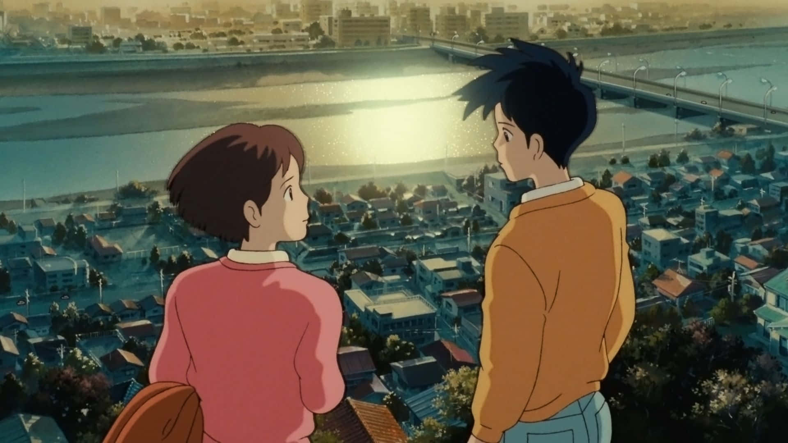
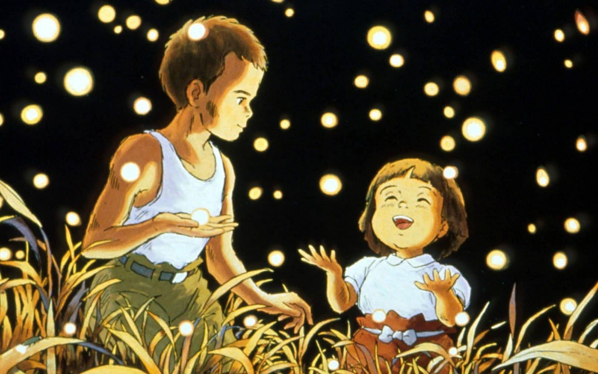

Whisper of the Heart

Whisper of the Heart is a deeply resonant and poetic Studio Ghibli coming-of-age story following Shizuku Tsukishima, a passionate, book-loving 14-year-old girl who dreams of becoming a writer. When she notices that a mysterious boy named Seiji Amasawa has checked out every single library book before her, she embarks on a journey of self-discovery that leads her to an antique shop run by a kind old man and a magical cat figurine named The Baron. Upon learning that Seiji is a fiercely driven, aspiring violin-maker determined to study in Italy, Shizuku is inspired to test her own artistic creative limits. As she throws herself into writing a fantastical story based on the Baron, she navigates the intense pressures of adolescence, self-doubt, and first love, ultimately discovering the unique gem of creative potential buried within herself.
Grave of the Fireflies

Grave of the Fireflies is a profoundly moving, devastating, and critically acclaimed Studio Ghibli wartime masterpiece directed by Isao Takahata. Set in Japan during the final months of World War II, the film follows a young teenager named Seita and his sweet little sister Setsuko after a devastating firebombing destroys their home and separates them from their mother. Forced to rely entirely on each other for survival, the siblings eventually seek shelter in an abandoned hillside bomb cave. Amidst severe food shortages, harsh social neglect, and overwhelming poverty, Seita does everything in his power to keep Setsuko's spirits up, finding moments of pure, quiet joy in the magical glow of catching fireflies at night. It stands as a heartbreakingly beautiful, unforgettable tribute to human resilience, childhood innocence, and the profound tragedy of war.